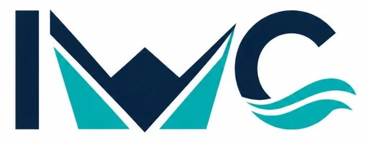

Tailings
GISTM Compliance: What Tier-1 Operators Need by 2026
A practical breakdown of the conformance gaps we see most often during independent dam safety reviews.
Read the brief →
Advanced geotechnical, environmental and tailings solutions for modern mining operations — built on field-tested data and independent engineering judgment.
From the first borehole to closure certification, IWC delivers integrated technical disciplines under one independent roof.
IWC was founded on a simple premise: the ground does not negotiate. Every recommendation we make is grounded in instrumentation, modelling and decades of failure-mode research — not assumption.
We work alongside mining houses, regulators and communities to design infrastructure that performs under real conditions, for the full life of an asset and beyond.
Select a region to view our active engineering footprint.
ESG outcomes are not a report-writing exercise — they're engineered into design from day one.
A practical breakdown of the conformance gaps we see most often during independent dam safety reviews.
Read the brief →Why conventional aquifer models underperform in the Atacama — and what we changed.
Read the brief →Lessons from retrofitting three Andean tailings facilities for next-generation seismic codes.
Read the brief →Tell us about your site, your timeline and your risk tolerance — we'll bring the rest.